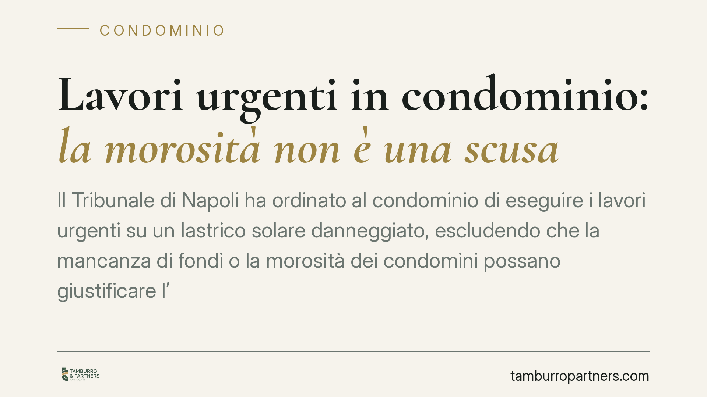

Lavori urgenti in condominio: la morosità non è una scusa
Il Tribunale di Napoli ha ordinato al condominio di eseguire i lavori urgenti su un lastrico solare danneggiato, escludendo che la mancanza di fondi o la morosità dei condomini possano giustificare l'inerzia. Una pronuncia che richiama gli amministratori alle loro responsabilità di custodia e offre uno strumento rapido ai condomini danneggiati.

Il caso
Un condomino, danneggiato dalle infiltrazioni provenienti da un lastrico solare comune, si è rivolto al giudice chiedendo un intervento immediato. Il condominio opponeva un ostacolo concreto: le casse erano vuote per effetto della morosità di una parte dei partecipanti.
Il Tribunale di Napoli, Sezione X Civile, con ordinanza resa ai sensi dell'art. 700 c.p.c., ha respinto questa difesa. Il condominio è stato condannato a eseguire i lavori urgenti a tutela della salute e dell'incolumità delle persone.
Inquadramento normativo
La decisione si fonda su due pilastri.
Il primo è l'art. 2051 c.c., che disciplina la responsabilità per i danni cagionati dalle cose in custodia. Il condominio, rispetto alle parti comuni, è considerato custode: risponde dei danni che da esse derivano, salvo prova del caso fortuito. Non si tratta di una responsabilità per colpa, ma di una responsabilità oggettiva legata al dovere di controllo e manutenzione del bene.
Il secondo è l'art. 700 c.p.c., il procedimento cautelare d'urgenza. Consente a chi teme un pregiudizio imminente e irreparabile al proprio diritto di ottenere dal giudice un provvedimento rapido, prima e indipendentemente dalla causa di merito. In presenza di infiltrazioni che compromettono la salubrità degli immobili e la sicurezza delle persone, i presupposti dell'urgenza (il cosiddetto *periculum in mora*) sono tipicamente integrati.
Il punto decisivo è che la carenza di liquidità non rientra tra le cause che liberano il custode. La morosità dei condomini è una vicenda interna al condominio, che non può essere opposta a chi subisce il danno né trasformata in motivo per rinviare interventi necessari.
Implicazioni pratiche
Per l'amministratore la pronuncia conferma un principio già consolidato ma spesso sottovalutato: l'obbligo di eseguire i lavori urgenti sulle parti comuni prescinde dallo stato di cassa.
L'amministratore ha il potere, e in questi casi il dovere, di disporre gli interventi necessari a evitare pregiudizi gravi, anche senza preventiva delibera assembleare, come previsto dall'art. 1130 c.c. in materia di atti conservativi e dall'art. 1135 c.c. per le spese urgenti.
La mancanza di fondi non attenua la responsabilità: semmai la aggrava, perché l'inerzia protratta espone il condominio al risarcimento dei danni ulteriori prodotti dall'attesa. Questi costi finiscono per gravare su tutti i condomini, compresi quelli in regola.
Per il condomino danneggiato, la via cautelare rappresenta uno strumento concreto e veloce. Non occorre attendere i tempi di una causa ordinaria: se il pericolo è attuale, il giudice può imporre l'esecuzione dei lavori in tempi ridotti.
Per il condomino moroso, infine, resta fermo che il recupero del credito segue strade proprie. Il condominio dispone del decreto ingiuntivo immediatamente esecutivo previsto dall'art. 63 disp. att. c.c. per riscuotere le quote non versate. Due piani distinti che non devono sovrapporsi: l'obbligo di intervenire non attende la riscossione.
Cosa fare in concreto
- Se sei amministratore, dispone senza ritardo gli interventi urgenti a tutela di salute e incolumità, documentando con perizie o preventivi la natura indifferibile dei lavori.
- Attiva subito il recupero delle morosità con decreto ingiuntivo ex art. 63 disp. att. c.c., tenendo separato questo fronte da quello della manutenzione urgente.
- Se sei condomino danneggiato, raccogli prove del danno e dell'urgenza (foto, relazioni tecniche, comunicazioni all'amministratore) prima di valutare un ricorso ex art. 700 c.p.c.
- Verifica la copertura assicurativa del condominio: una polizza sulle parti comuni può coprire sia i danni a terzi sia i costi degli interventi.
- Convoca o sollecita l'assemblea per deliberare l'anticipo dei fondi necessari, anche a carico dei condomini in regola salvo rivalsa sui morosi.
Ogni condominio ha una storia a sé.
Se gestisci un'amministrazione e vuoi un confronto su una specifica questione condominiale, scrivi allo studio. Ti rispondiamo entro un giorno lavorativo.